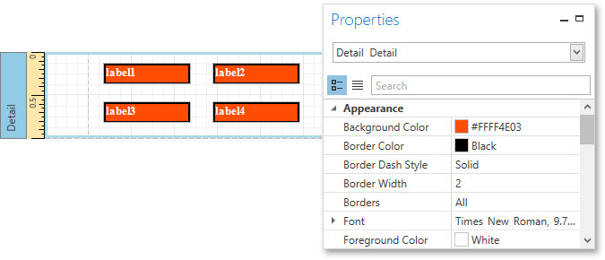
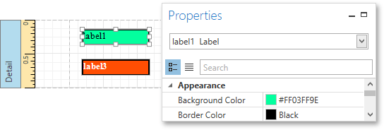
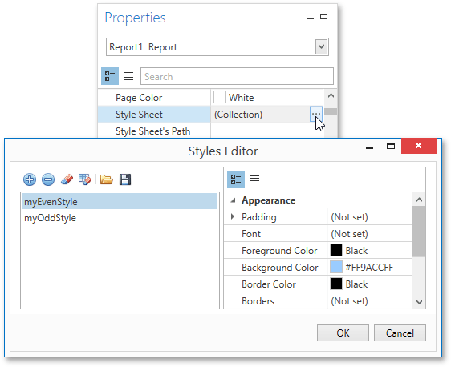
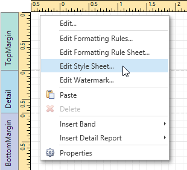
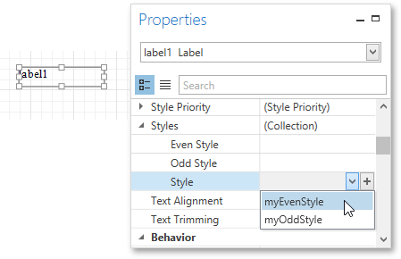
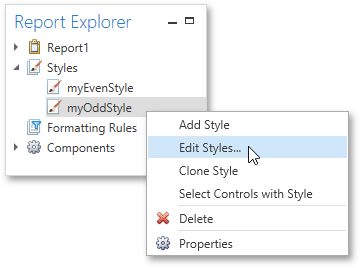
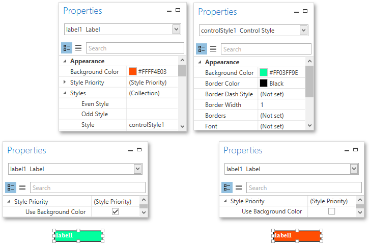

Understanding Style Concepts
This document describes how you can provide a professional look to your reports by effectively adjusting the appearance of its elements.
This document consists of the following sections.
Appearance Properties
In the Report Designer, a report and each of its elements (bands and controls) has a complete set of appearance options (such as Background Color, Borders, Font, Foreground Color, Text Alignment, etc.). By default, these properties are not specified, meaning that their real values are obtained from a control's (or band's) parent, which is the report itself. So, the appearance specified for a report is distributed to all its child elements. Similarly, the appearance of a band is translated to the controls it contains.

In turn, a control's appearance can be adjusted independently from its parent.

Visual Styles
In addition to the capability to specify appearance property values for every control and band, you can create comprehensive global styles (which are stored in the report's style sheet), and then assign them to individual report elements.
Click the ellipsis button for the report's Style Sheet property to invoke the Styles Editor, which allows you to manage a report's style sheets, customize them, save them to a file and load from it.

You can also invoke the Styles Editor by right-clicking the report and selecting Edit Style Sheet... in the context menu.

To assign a particular style to a control, invoke the drop-down list for its Style property. Then, select one of the styles stored in a report's sheet collection or click the plus button to create a new style sheet.

Note that if a style is assigned to a band, it is applied to all controls that the band contains.
You can also use the Report Explorer to access the style collection. Commands of the context menu allow you to add, edit, clone or delete a style.

Styles Priority
A style defines the same appearance properties that are defined by a control's (or band's) appearance properties. When both styles and individual appearance settings are assigned to an element, you can control the priority of their options using an element's Style Priority property.
By default, most of the Style Priority's options (Use Background Color, Use Border Color, etc.) are set to Yes. This means that if any style is assigned to a control, its properties will have a higher priority than the appearance properties of this element or its parent. You can assign a higher priority to an element's appearance property by disabling the corresponding Use* property.
The following image demonstrates how the Style Priority property works.

The same principles are applied to the odd-even styles feature, which allows you to alternate the appearance of consecutive data rows in your report. For details on this, refer to Use Odd and Even Styles.
Note
When conditional formatting is applied to an element, its appearance definition has the highest priority.